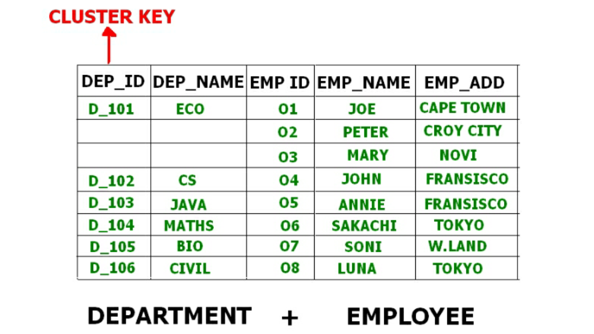

Prerequisite – File Organization – Set 1, File Organization-Set 2
B+ Tree File Organization –
B+ Tree, as the name suggests, It uses a tree like structure to store records in File. It uses the concept of Key indexing where the primary key is used to sort the records. For each primary key, an index value is generated and mapped with the record. An index of a record is the address of record in the file.
B+ Tree is very much similar to binary search tree, with the only difference that instead of just two children, it can have more than two. All the information is stored in leaf node and the intermediate nodes acts as pointer to the leaf nodes. The information in leaf nodes always remain a sorted sequential linked list.
{kind=link}
In the above diagram 56 is the root node which is also called the main node of the tree.
The intermediate nodes here, just consist the address of leaf nodes. They do not contain any actual record. Leaf nodes consist of the actual record. All leaf nodes are balanced.
Pros and Cons of B+ Tree File Organization –
Pros –
- Tree traversal is easier and faster.
- Searching becomes easy as all records are stored only in leaf nodes and are sorted sequential linked list.
- There is no restriction on B+ tree size. It may grows/shrink as the size of data increases/decreases.
Cons –
- Inefficient for static tables.
Cluster File Organization –
In cluster file organization, two or more related tables/records are stored withing same file known as clusters. These files will have two or more tables in the same data block and the key attributes which are used to map these table together are stored only once.
Thus it lowers the cost of searching and retrieving various records in different files as they are now combined and kept in a single cluster.
For example we have two tables or relation Employee and Department. These table are related to each other.

Therefore these table are allowed to combine using a join operation and can be seen in a cluster file.

If we have to insert, update or delete any record we can directly do so. Data is sorted based on the primary key or the key with which searching is done. Cluster key is the key with which joining of the table is performed.
Types of Cluster File Organization – There are two ways to implement this method:
- Indexed Clusters – In Indexed clustering the records are group based on the cluster key and stored together. The above mentioned example of Emplotee and Department relationship is an example of Indexed Cluster where the records are based on the Department ID.
- Hash Clusters – This is very much similar to indexed cluster with only difference that instead of storing the records based on cluster key, we generate hash key value and store the records with same hash key value.